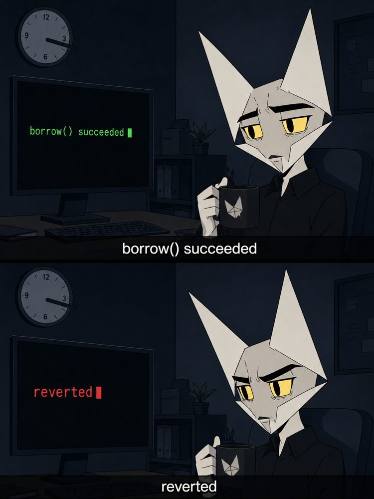

Decisions that are irreversible at Link time
transactions.days_requested: 730. The default is 90 and it cannot be raised later without deleting the Item and re-linking the borrower. Set it to the maximum, always.assetsmust be in the products array at Link if asset reports will ever be wanted on that Item. It cannot be added later.options.include_original_description: true. B2B wires and ACH rows resolve as low-confidence strings; the raw descriptor is what classification runs on.- Request the business betas (account indicator, business categories) through the account manager before onboarding real borrowers, not after.
The integration bugs everyone hits
The unarmed webhook
SYNC_UPDATES_AVAILABLE only fires after the first
/transactions/sync call on the Item. Call it immediately
after the token exchange or sit waiting for a webhook that never
comes.
The inverted sign
Plaid's
amount is positive for outflows. Normalize to
positive-inflow once, at ingestion, and never let a raw sign reach the
metric engine.
The eternal meter
An Item in
ITEM_LOGIN_REQUIRED bills its subscription until
/item/remove or /item/products/terminate.
Offboarding hygiene is a billing control.
The trusted webhook
Webhooks
are unauthenticated HTTP posts until proven otherwise. Verify the ES256
JWT in Plaid-Verification against
/webhook_verification_key/get, compare the body hash, cache
keys by id, and make every handler idempotent: delivery is
at-least-once with 24-hour retries.
The cursor mixup
One cursor per Item stream; filtering by account creates separate streams. On a mutation-during-pagination error, restart the whole update loop from the first-page cursor, not the failed page. Store cursors atomically with the rows they produced.
The polling trap
/accounts/balance/get is limited to five calls a minute per
Item and bills per call. Read cached balances from
/accounts/get; force real-time pulls only at decision
moments.
Ops posture
- Webhook-driven health dashboard keyed on
ERROR,PENDING_DISCONNECT,PENDING_EXPIRATION,LOGIN_REPAIRED,NEW_ACCOUNTS_AVAILABLE. Pre-empt scheduled breaks 30 days out with update-mode re-link campaigns; expect 2 to 5% of Items to need attention monthly (lore, to be measured in the first 90 days). - Consent expiry is data:
consent_expiration_timeon/item/get, three-year consent logs on/consent/events/get. Archive both. - Tokens: server-side only, KMS-encrypted, vaulted away from the
warehouse, referenced by opaque ids.
/item/access_token/invalidaterotates on suspicion. The production security questionnaire asks for all of this in writing, so build it before the questionnaire, not after. - Staleness is a first-class published field, never an internal embarrassment. Every metric bundle carries window, months used, coverage ratio and staleness hours.
The two-week prototype
The full runbook is on the architecture page. The point of the spike: measure what research cannot. Actual history depth returned by the borrower's institutions, business-indicator population, counterparty confidence on real B2B flows, statement availability, and the institution-specific surprises. Trial plan gives ten free live Items; one friendly borrower is enough.
Where the effort actually goes
| Component | Effort | Note |
|---|---|---|
| Plaid ingestion (Link, exchange, sync, webhooks, health) | Weeks | Well-trodden; the gotchas above are most of it |
| Raw archive + warehouse | Weeks | Small data; Object Lock, KMS, bitemporal columns from day one |
| Classification | The long pole | Buy the commodity layer (Ntropy, Heron, Ocrolus for OCR), own the trading-firm classes vendors cannot do; audit every override |
| Metric engine | Weeks | Ten formulas, versioned code, input manifest hashes, reproducible runs |
| Distribution (signing, tear-sheets, EAS, hooks) | Weeks | Org key first, enclave key later; attestations expire and revoke |
| Item babysitting | Forever | 0.25 to 0.5 FTE ongoing; contractual cure periods make it tractable |
